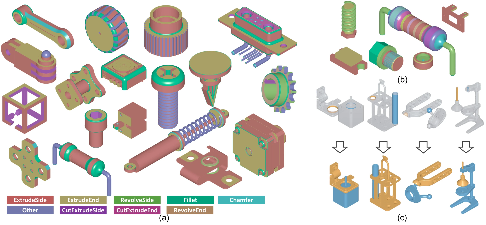
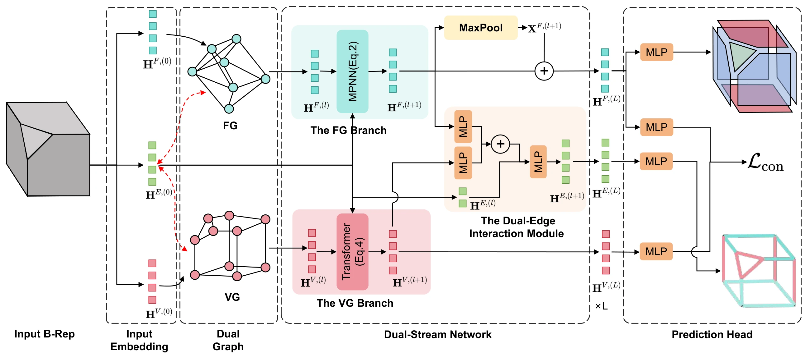
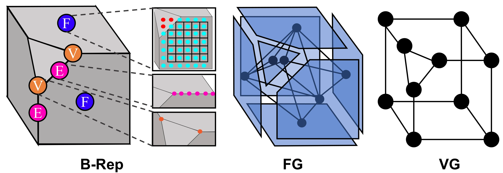
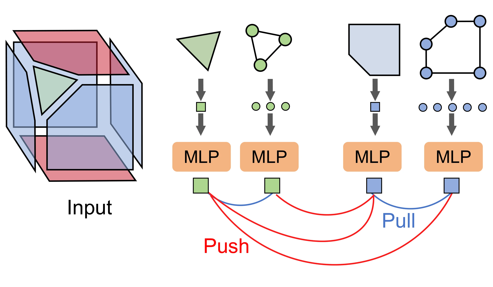
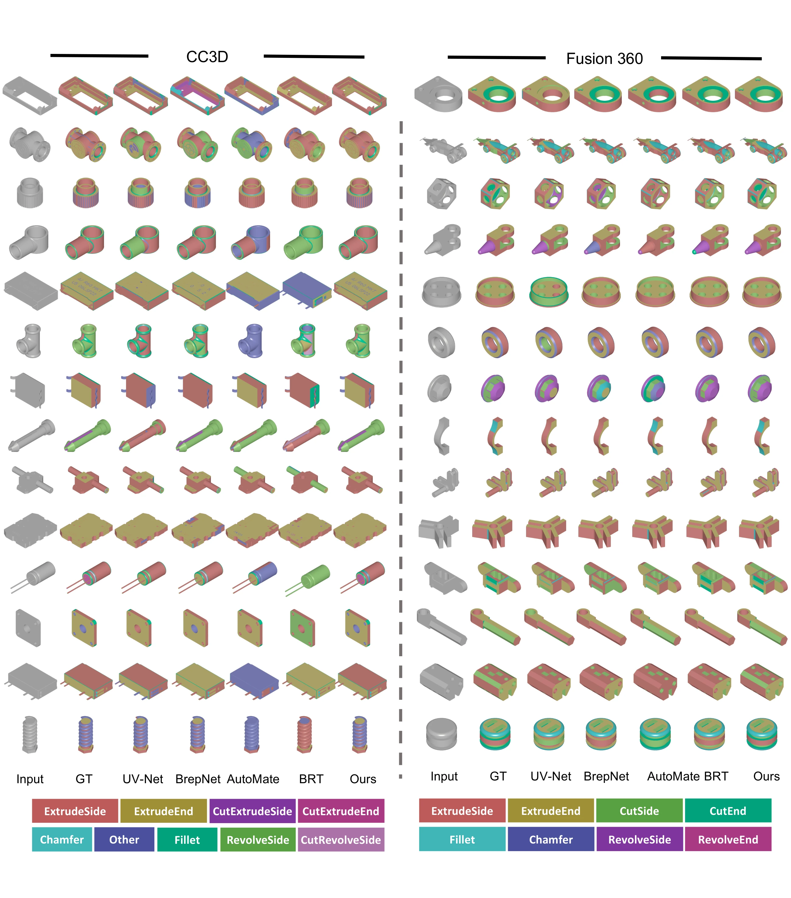
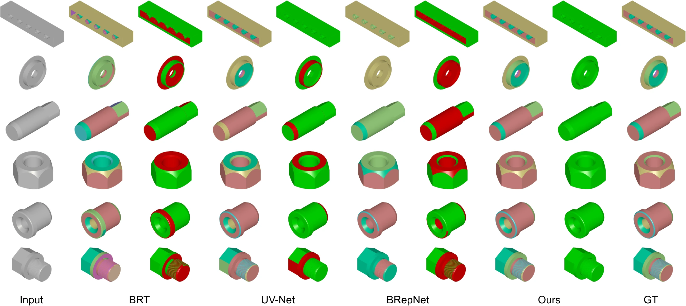
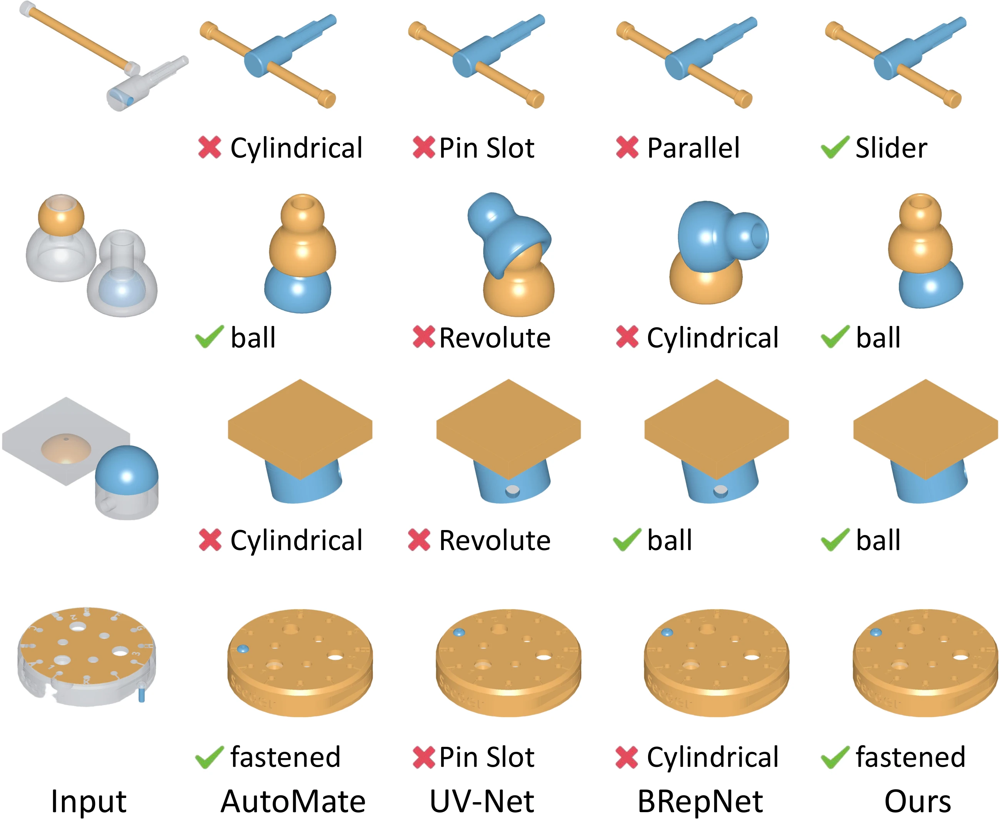
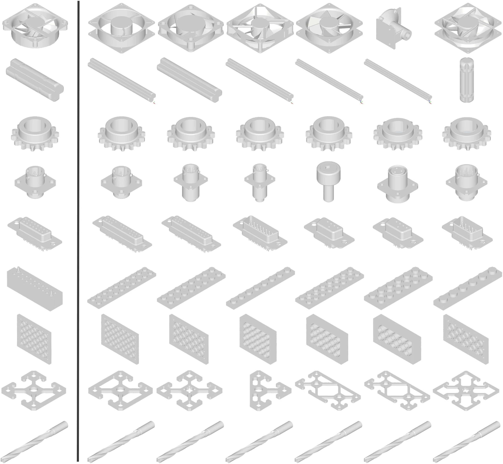
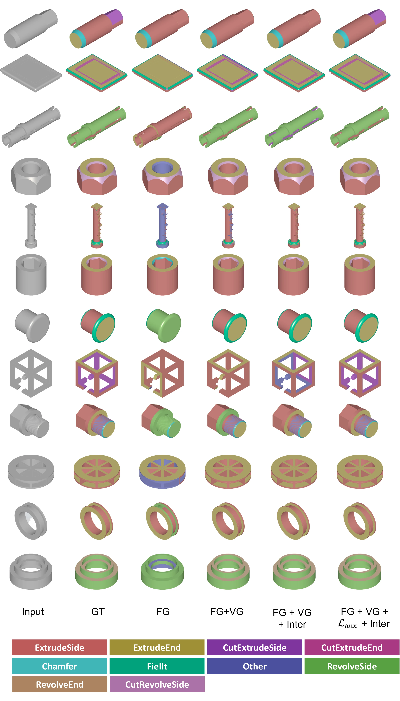

BRepDSN: A Dual-stream Network Design for B-Rep Representation Learning Leveraging the Duality of Face and Boundary Vertices
1 University of Chinese Academy of Sciences2 Nanyang Technological University3 KAUST
* Equal contribution · ✉ Corresponding author and project lead

Abstract
Designing a neural network for Boundary Representation (B-Rep) models impacts fundamental tasks in Computer-Aided Design (CAD), Engineering (CAE), and Manufacturing (CAM). Existing methods primarily leverage face adjacency for B-Rep feature encoding, overlooking crucial boundary features from the B-Rep vertices.
To address this, we introduce a novel dual-stream neural network, called BRepDSN, that explicitly leverages complementary features from both a Face-adjacency Graph (FG) and a Vertex-adjacency Graph (VG). Our method employs alternating message passing between these two graph streams with bidirectional information exchange. Specifically, faces gather boundary-aware cues from incident vertices through a dual mapping, while vertices are refined by face-level context, ensuring boundary-aware and semantically aligned feature encoding.
To further boost the performance, we propose a face-vertex contrastive objective. This objective constructs contrastive pairs based on the duality between a face's embedding and the aggregated embedding of its boundary vertices. Additionally, for segmentation tasks, we use an auxiliary classification loss to determine boundary edges, which acts as a dual task to the main face segmentation.
BRepDSN can be used for multiple B-Rep processing tasks. We evaluate the following example tasks: 1) B-Rep Modeling Operation Segmentation, 2) Operation Step Segmentation, 3) B-Rep Classification, 4) Machining Feature Segmentation, and 5) Assembly Mating. Extensive experiments show that our method sets a new state of the art on all five tasks.
Method
Given a B-Rep model, BRepDSN embeds its faces, edges, and vertices and constructs two complementary graphs. The face stream captures surface semantics and face adjacency, while the vertex stream captures the wireframe and boundary structure. Shared B-Rep edges connect the two streams through a dual-edge interaction module.

The FG branch uses message passing to refine face features. The VG branch aggregates incident edge features and applies a transformer to model vertex context. The dual-edge interaction module combines the adjacent face and vertex features to update the shared edge embeddings for the next layer.
Dual-Graph Representation and Face-Vertex Consistency
The face graph represents adjacency between B-Rep faces; the vertex graph represents connectivity along B-Rep edges. Each B-Rep edge has a corresponding edge in both graphs, allowing the two streams to exchange complementary information.
A face also corresponds to the closed boundary formed by its vertices. BRepDSN uses this relationship to align a face feature with the pooled features of its boundary vertices through contrastive learning.


Boundary-Aware Training
The segmentation objective combines face segmentation, auxiliary boundary classification, and supervised face-vertex contrastive learning. The boundary head predicts whether the two incident faces of an edge have different segmentation labels, complementing the face-level prediction.
B-Rep Analysis Results
BRepDSN supports both face-level analysis and shape-level tasks, with task-specific decoders and training. The following comparisons show modeling operation segmentation on Fusion360 and CC3D, and operation step segmentation on CC3D-Ops. Click a figure to view the original full-resolution PDF.


Quantitative Comparison
BRepDSN achieves 88.50% mIoU on Fusion360 and 60.35% mIoU on CC3D, improving over the strongest baseline by 2.96 and 14.65 percentage points, respectively.
| Method | Fusion360 | CC3D | ||||
|---|---|---|---|---|---|---|
| oAcc ↑ | mAcc ↑ | mIoU ↑ | oAcc ↑ | mAcc ↑ | mIoU ↑ | |
| Hier-CADNet★ | 88.9 | — | 67.9 | 57.5 | — | 26.9 |
| UV-Net | 92.3 | 71.41 | 72.4 | 65.11 | 36.53 | 26.49 |
| BRepNet | 94.3 | 79.50 | 81.4 | 71.4 | 47.95 | 34.24 |
| AutoMate | 94.78 | 85.25 | 80.80 | 74.44 | 54.74 | 44.09 |
| BRT | 94.48 | 84.55 | 79.23 | 72.7 | 57.43 | 45.7 |
| UVConv★ | 94.65 | — | 80.16 | — | — | — |
| Brep2Shape★ | 96.88 | — | 83.77 | — | — | — |
| CADOps-Net★ | 95.9 | — | 84.2 | 75.0 | — | 44.3 |
| BRep-BERT★ | 96.02 | — | 85.54 | — | — | — |
| BRepDSN Ours | 97.16 | 91.39 | 88.50 | 84.01 | 68.51 | 60.35 |
All scores are percentages. oAcc: overall face accuracy; mAcc: mean class accuracy; mIoU: mean intersection over union. ↑ Higher is better. ★ Results from original papers; — not reported.
Assembly Mating

Shape Retrieval

Dual-Stream Ablation

BibTeX
If you find this work useful in your research, please consider citing our paper.
@misc{song_brepdsn,
title = {BRepDSN: A Dual-stream Network Design for B-Rep
Representation Learning Leveraging the Duality
of Face and Boundary Vertices},
author = {Song, Haoxuan and Yang, Bingchen and Xiao, Jun
and Wonka, Peter and Jiang, Haiyong},
url = {https://github.com/shinodashx/BrepDSN}
}